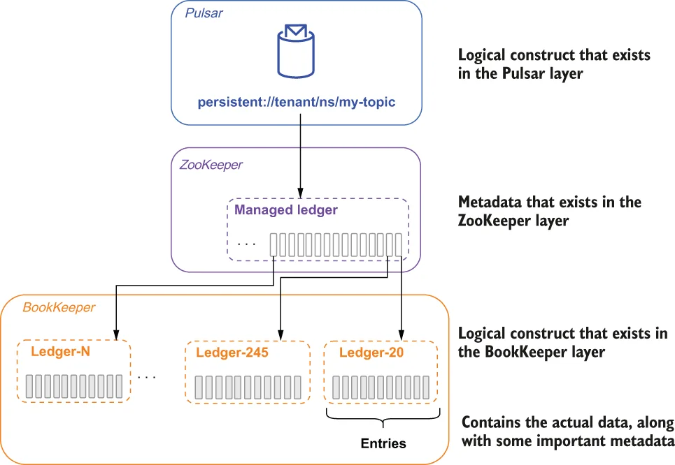
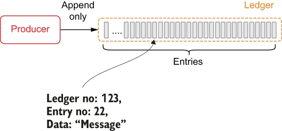
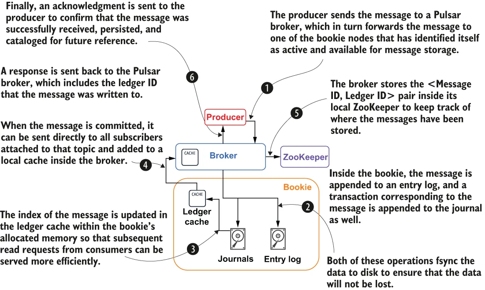

Pulsar guarantees message delivery for all message consumers. If a message successfully reaches a Pulsar broker, you can rest assured it will be delivered to its intended target. In order to provide this guarantee, all non-acknowledged messages must be persisted until they can be delivered to and acknowledged by consumers. As I mentioned earlier, Pulsar uses a distributed write-ahead log (WAL) system called Apache BookKeeper for persistent message storage. BookKeeper is a service that provides persistent storage of streams of log entries in sequences called ledgers.
Pulsar 为所有消息消费者保证消息投递。如果一条消息成功抵达某个 Pulsar broker，你可以放心它一定会被投递到预期的目标。为了提供这一保证，所有未被确认的消息都必须被持久化保存，直到它们能够被投递给消费者并获得确认。正如我前面提到的，Pulsar 使用一个名为 Apache BookKeeper 的分布式预写日志（WAL）系统来进行消息的持久化存储。BookKeeper 是一项服务，它把日志 entry 流持久化存储在被称为 ledger 的序列中。
Logical storage architecture
逻辑存储架构
Pulsar topics can be thought of as infinite streams of messages that are stored sequentially in the order the messages are received. Incoming messages are appended to the end of the stream, while consumers read messages further up the stream based on the data access patterns that I discussed earlier. While this simplified view makes it easy for us to reason about a consumer’s position within the topic, such an abstraction cannot exist in reality due to the space limitations of storage devices. Eventually this abstract infinite stream concept must be implemented on a physical system where such a limitation exists.
Pulsar 的主题可以被看作无限的消息流，消息按被接收的顺序依次存储。传入的消息被追加到流的末尾，而消费者则根据我前面讨论过的数据访问模式，从流中更靠前的位置读取消息。虽然这种简化的视图让我们很容易推断消费者在主题中的位置，但由于存储设备的空间限制，这样的抽象在现实中是不可能存在的。最终，这个抽象的无限流概念必须在一个存在此类限制的物理系统上实现出来。
Apache Pulsar takes a dramatically different approach from traditional messages systems, such as Kafka, when it comes to implementing stream storage. Within Kafka, each stream is separated into multiple replicas that are each stored entirely on a broker’s local disk. The great thing about this approach is that it is simple and fast because all writes are sequential, which limits the amount of disk head movement required to access the data. The downside to Kafka’s approach is that a single broker must have sufficient storage capacity to hold the partition data, as I discussed in chapter 1.
在实现流存储这一点上，Apache Pulsar 采取的方式与 Kafka 等传统消息系统截然不同。在 Kafka 中，每个流被分成多个副本，每个副本都完整地存储在某台 broker 的本地磁盘上。这种做法的好处在于简单且快速，因为所有写入都是顺序的，这限制了访问数据时所需的磁头移动量。Kafka 这种做法的缺点在于：单台 broker 必须具备足够的存储容量来容纳分区数据，正如我在第 1 章中讨论过的。
So how is Apache Pulsar’s approach different? For starters, each topic is not modeled as a collection of partitions, but rather as a series of segments. Each of these segments can contain a configurable number of messages, with the default being 50,000. Once a segment is full, a new one is created to hold new messages. Therefore, a Pulsar topic can be thought of as an unbounded list of segments with each containing a subset of the messages, as shown in figure 2.5, which shows both the logical architecture of the stream storage layer and how it maps to the underlying physical implementation.
那么 Apache Pulsar 的做法有何不同呢？首先，每个主题不是被建模为一组分区，而是被建模为一系列分段。这些分段中的每一个都可以包含可配置数量的消息，默认值为 50,000 条。一旦某个分段被写满，就会创建一个新的分段来容纳新的消息。因此，一个 Pulsar 主题可以被看作一个无边界的分段列表，每个分段包含消息的一个子集，如图 2.5 所示；该图既展示了流存储层的逻辑架构，也展示了它如何映射到底层的物理实现。

Figure 2.5 The data for a Pulsar topic is stored as a sequence of ledgers inside the BookKeeper layer. A list of these ledger IDs is stored inside a logical construct known as a managed ledger on ZooKeeper. Each ledger holds 50,000 entries that store a copy of the message data. Note that persistent://tenant/ns/my-topic will be discussed as a concept later in the book.
图 2.5 Pulsar 主题的数据在 BookKeeper 层中以一系列 ledger 的形式存储。这些 ledger ID 的列表被保存在 ZooKeeper 上一个被称为 managed ledger 的逻辑结构中。每个 ledger 容纳 50,000 个 entry，其中存有消息数据的一份副本。请注意，persistent://tenant/ns/my-topic 将作为概念在本书后面讨论。
A Pulsar topic is nothing more than an addressable endpoint that is used to uniquely identify a specific topic within Pulsar and is analogous to a URL in the sense that it is merely used to uniquely identify the resource that the client is attempting to connect to. The topic name must be decoded by the Pulsar broker to determine the storage location of the data.
Pulsar 主题只不过是一个可寻址的端点，用于在 Pulsar 内唯一标识某个特定的主题；它在某种意义上类似于 URL——仅仅被用来唯一标识客户端试图连接的那个资源。主题名称必须由 Pulsar broker 进行解析，以确定数据的存储位置。
Pulsar adds an additional layer of abstraction on top of BookKeeper’s ledgers, known as managed ledgers, that retains the IDs of the ledgers that hold the data published to the topic. As we can see in figure 2.5, when data was first published to topic A, it was written to ledger-20. After 50,000 records had been published to the topic, the ledger was closed and another one (ledger-245) was created to take its place. This process is repeated every 50,000 records to store the incoming data, and the managed ledger retains this unique sequence of ledger IDs inside of ZooKeeper.
Pulsar 在 BookKeeper 的 ledger 之上又增加了一层抽象，称为 managed ledger，它保存着那些承载了发布到该主题的数据的 ledger 的 ID。正如我们在图 2.5 中看到的，当数据首次发布到主题 A 时，它被写入了 ledger-20。在向该主题发布了 50,000 条记录之后，该 ledger 被关闭，并创建了另一个 ledger（ledger-245）来取而代之。每 50,000 条记录就会重复一次这个过程，以存储传入的数据；而 managed ledger 则在 ZooKeeper 中保存这个唯一的 ledger ID 序列。
Later, when a consumer attempts to read the data from topic A, the managed ledger is used to locate the data inside of BookKeeper and return it to the consumer. If the consumer is performing a catch-up read starting at the oldest message, then it would first get all the data from ledger-20, followed by ledger-245, and so on. The traversal of these ledgers from oldest to youngest is transparent to the end user and creates the illusion of a single sequential stream of data. Managed ledgers allow this to happen and retain the ordering of the BookKeeper ledgers to ensure the messages are read in the same order they were published.
之后，当某个消费者试图从主题 A 读取数据时，managed ledger 会被用来在 BookKeeper 内部定位数据并将其返回给消费者。如果该消费者正在执行从最旧的消息开始的追赶读，那么它会先获取 ledger-20 中的全部数据，然后是 ledger-245，以此类推。这种从最旧到最新遍历各个 ledger 的过程对终端用户是透明的，并营造出"单一的连续数据流"的错觉。managed ledger 使这一切成为可能，并保留 BookKeeper 各 ledger 的顺序，以确保消息按照它们被发布时的相同顺序被读取。
BookKeeper physical architecture
BookKeeper 物理架构
In BookKeeper, each unit of a ledger is referred to as an entry. These entries contain the actual raw bytes from the incoming messages, along with some important metadata that is used to track and access the entries. The most critical piece of metadata is the ID of the ledger to which it belongs, which is kept in the local ZooKeeper instance, so the message can be retrieved quickly from BookKeeper when a consumer attempts to read it in the future. Streams of log entries are stored in append-only data structures, known as ledgers, as shown in figure 2.6.
在 BookKeeper 中，ledger 的每个单元被称为一个 entry。这些 entry 包含来自传入消息的实际原始字节，以及一些用于跟踪和访问这些 entry 的重要元数据。其中最关键的元数据是它所属 ledger 的 ID，该 ID 被保存在本地的 ZooKeeper 实例中，以便将来消费者试图读取该消息时，能够快速从 BookKeeper 中检索到它。日志 entry 流被存储在仅支持追加的数据结构中，这些结构被称为 ledger，如图 2.6 所示。

Figure 2.6 In BookKeeper, incoming entries get stored together as ledgers on servers known as bookies.
图 2.6 在 BookKeeper 中，传入的 entry 被一起存储为 ledger，存放在被称为 bookie 的服务器上。
Ledgers have append-only semantics, meaning that entries are written to a ledger sequentially and cannot be modified once they’ve been written to a ledger. From a practical perspective, this means
ledger 具有仅追加的语义，这意味着 entry 被顺序写入 ledger，并且一旦写入 ledger 就无法再被修改。从实践角度看，这意味着
Pulsar broker 首先创建一个 ledger，然后向该 ledger 追加 entry，最后关闭该 ledger。除此之外不允许任何其他交互。
在 ledger 被关闭之后（无论是正常关闭还是因为进程崩溃），它就只能以只读模式被打开。
最后，当 ledger 中的 entry 不再需要时，整个 ledger 可以从系统中删除。
The individual BookKeeper servers that are responsible for the storage of ledgers (more specifically, fragments of ledgers) are known as bookies. Whenever entries are written to a ledger, those entries are written across a subgroup of bookie nodes known as an ensemble. The size of the ensemble is equal to the replication factor (R) you specify for your Pulsar topic and ensures that you have exactly R copies of the entry saved to disk to prevent data loss.
负责存储 ledger（更确切地说，是 ledger 的片段）的各个 BookKeeper 服务器被称为 bookie。每当 entry 被写入某个 ledger 时，这些 entry 会被写入一个由若干 bookie 节点组成的子组，该子组被称为 ensemble。ensemble 的大小等于你为 Pulsar 主题指定的复制因子（R），并确保磁盘上恰好保存了该 entry 的 R 份副本，以防止数据丢失。
Bookies manage data in a log-structured way, which is implemented using three types of files: journals, entry logs, and index files. The journal file retains all of the BookKeeper transaction logs. Before any update to a ledger takes place, the bookie ensures that a transaction describing the update is written to disk to prevent data loss.
bookie 以日志结构的方式管理数据，这是通过三类文件实现的：journal（事务日志）、entry log（entry 日志）和 index file（索引文件）。journal 文件保存 BookKeeper 的全部事务日志。在对 ledger 进行任何更新之前，bookie 都会确保描述该更新的事务已被写入磁盘，以防止数据丢失。

Figure 2.7 Message persistence steps in Pulsar
图 2.7 Pulsar 中的消息持久化步骤
The entry log file contains the actual data written to BookKeeper. Entries from different ledgers are aggregated and written sequentially, while their offsets are kept as pointers in a ledger cache for fast lookup. An index file is created for each ledger, which contains several indexes that record the offsets of data stored in entry log files. The index file is modelled after index files in traditional relational databases and allows for quick lookups for ledger consumers. When a client publishes a message to Pulsar the message will go through the steps shown in figure 2.7 to persist it to disk within a BookKeeper ledger.
entry log 文件包含写入 BookKeeper 的实际数据。来自不同 ledger 的 entry 被聚合并顺序写入，而它们的偏移量则作为指针保存在 ledger 缓存中，以便快速查找。每个 ledger 都会创建一个索引文件，其中包含若干索引，记录存储在 entry log 文件中的数据的偏移量。该索引文件仿照传统关系型数据库中的索引文件设计，使 ledger 的消费者能够快速查找。当客户端向 Pulsar 发布一条消息时，该消息会经历图 2.7 所示的各个步骤，从而被持久化到 BookKeeper ledger 内的磁盘上。
By distributing the entry data across multiple files on different disk devices, bookies are able to isolate the effects of read operations from the latency of ongoing write operations, allowing them to handle thousands of concurrent reads and writes.
通过把 entry 数据分散到不同磁盘设备上的多个文件中，bookie 能够把读操作的影响与正在进行的写操作的延迟隔离开来，从而支持数千个并发的读写操作。